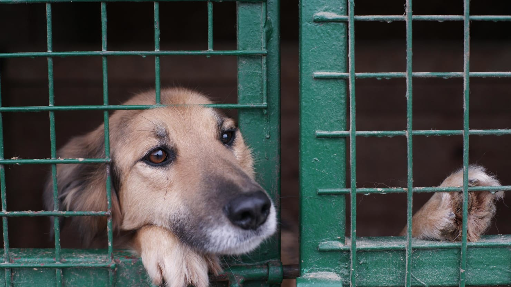

Como adotar um animal de estimação
Passo 1 - Preparações
Quando planejando em adotar um animal, certifique-se de que pode cuidar do animal. Certos animais, como cães, precisam de muita atenção, cuidado e recursos econômicos. Verifique se sua casa tem espaço o bastante para o tipo de animal que você pretende adotar, assim como você deve ter pelo menos 2 horas para cuidar e dar atenção ao animal . Faça uma pesquisa no tipo de animal que você quer adotar: o quê come, doenças comuns e outras particularidades.
Passo 2 - Encontre um Abrigo
Agora, é hora de decidir de onde seu novo amigo virá: você pode usar esse link para achar um perto de você. Você também pode usar qualquer um does links na barra lateral. Depois que achar um abrigo perto de você, verifique sua reputação - os abrigos dos links encontrados aqui são todos seguros, mas se você obter um fora daqui, é extremamente recomendado checá-lo. Se quiser, podemos verificar o lugar para você: Mande o endereço, telefone e outras informações por aqui ou mande-nos um e-mail pelo endereço: verifique@rescool.net
Passo 3 - Conheça seu novo amigo
Quando for escolher um animal, tome conta de suas condições: cada um é diferente, e alguns irão precisar de cuidados especiais por causa de trauma ou deficiências. Alguns abrigos irão analizarão seu espaço de vivência e aptidão para cuidar deles - quando questionado, sempre responda sinceramente.
Notas Finais
Enquanto quase todos querem adotar animais mais novos e com menos dificuldades para criar - eu encorajo você a adotar um animal mais velho, ou com problemas de saúde, que são mais difíceis de cuidar - você poderia ser a diferença na vida deles ;)